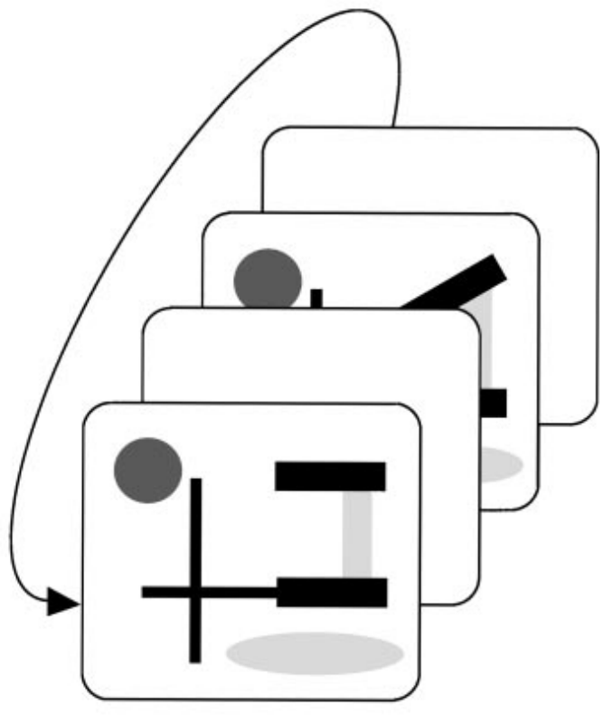
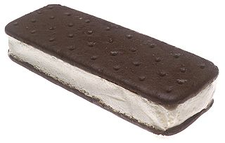
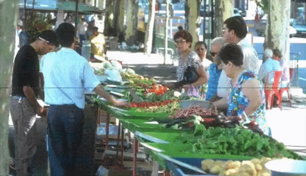
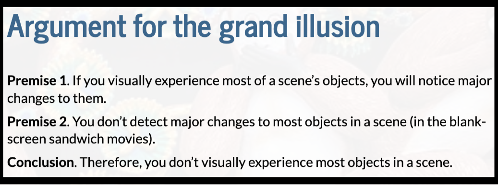
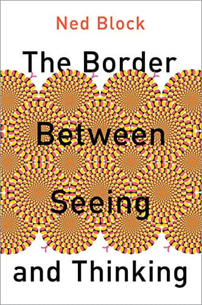
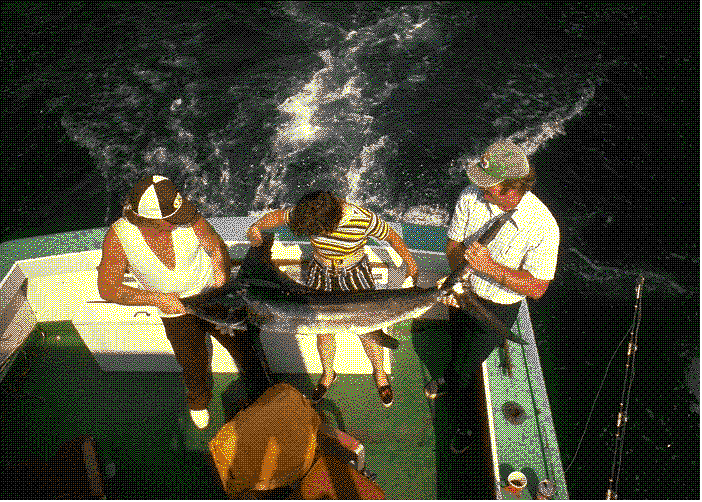
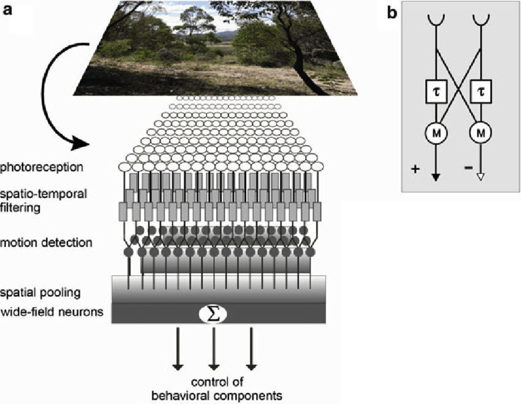
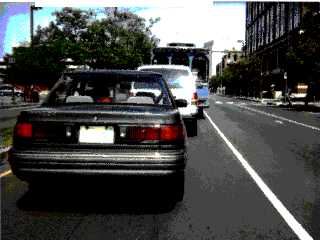

Attention Lecture 5
2026-09-08
Learning outcomes
- Review capacity limits of visual processing (Ch. 8, 9)
- Articulate the tension between subjective visual experience and processing limits (Ch. 3.5)
- Define change blindness, explain causes and the link with vigilance (Ch. 6)
- Evaluate the “grand illusion of visual experience” argument (Ch. 13.4)
- Explain the role of focused attention in change detection (Ch. 6)
- Define inattentional blindness and distinguish it from change blindness (Ch. 13.4)
Learning outcomes: Detailed
- Review capacity limits of visual processing (Ch. 8, 9)
- Explain why identifying two simultaneous letters exceeds processing capacity, whereas detecting an oddball colour does not.
- Distinguish tasks that can be processed in parallel (individual features) from those that require the limited-capacity bottleneck (feature combinations, letter/word identification).
- Articulate the tension between subjective visual experience and processing limits (Ch.3.5)
- Explain why it feels like we see everything at once even though careful experiments reveal severe capacity limits.
- Define phenomenal consciousness and explain Ned Block’s claim that “phenomenal content overflows cognitive access”.
- Define change blindness, explain causes and the link with vigilance (Ch. 6)
- Define change blindness and describe the blank-screen sandwich paradigm used to demonstrate it.
- Explain the role of the blank frame in disrupting motion-detector signals, preventing the change location from being salient.
- Explain why “mud splashes” produce a similar effect to the blank screen.
- Explain why removing the blank frame allows changes to be detected
- the change produces a unique sudden-motion signal.
- Evaluate the “grand illusion of visual experience” argument (Ch. 13.4)
- Reproduce the logical structure of the grand illusion argument (Premise 1, Premise 2, Conclusion) in your own words.
- Identify which premise researchers have contested and why: having a visual experience of an object does not entail having (a) a stored prior representation or (b) a comparison process that would reveal a change.
- Explain the role of focused attention in change detection (Ch. 6)
- State that focused attention is required to hold onto a prior representation and/or to compare before-and-after representations.
- Link this to Feature Integration Theory: without focused attention, features are not processed in some way, making comparison impossible.
- Define inattentional blindness and distinguish it from change blindness (Ch. 13.4)
- Define inattentional blindness as failing to notice a clearly visible, unexpected stimulus when attention is otherwise engaged.
- Contrast with change blindness
- Inattentional blindness does not require a blank screen or flicker — the missed object is continuously present.
Two letters can exceed processing capacity
Capacity is very limited for some things
- Letters (that don’t make a word), or words
Capacity is very limited for some things
- Letters (that don’t make a word) or words
- Other feature combinations
Capacity for some things is very limited, but
Feels like we see everything at once
- There is a contradiction, or at least a tension, there
- What does it mean for consciousness?
- Talked about consciousness, but not about the tension that
- we feel we see everything at once
- certain processing is very limited
Philosophers freak out
- “phenomenal” consciousness (Ch. 3.5)
- Visual experience, not just performance
- “phenomenal content overflows cognitive access” - Ned Block
CHANGE BLINDNESS - Ch. 6
Points to “a grand illusion of visual experience”?
Blank screen sandwiches


Find the change

Change blindness
Be able to explain why it inspired the “grand illusion of visual experience” theory
It feels like we see everything at once
- But, change blindness!
- So, we’re wrong that we see everything simultaneously.
- There’s a “grand illusion of visual experience”
- Much like the refrigerator light illusion
Argument for “the grand illusion”
Premise 1. If you visually experience most of a scene’s objects, you will notice major changes to them.
Premise 2. You don’t detect major changes to most objects in a scene (blank-screen sandwiches).
Conclusion. Therefore, you don’t visually experience most objects in a scene.
If A, then B.
B is not true.
Therefore, A is not true.
Argument for “the grand illusion”
Premise 1. If you visually experience most of a scene’s objects, you will notice major changes to them.
Premise 2. You don’t detect major changes to most objects in a scene (blank-screen sandwiches).
Conclusion. Therefore, you don’t visually experience most objects in a scene.
If A, then B.
B is not true.
Therefore, A is not true.
Answer questions about the “grand illusion of visual experience” argument
Menti.com
8890 2133
Argument for “the grand illusion”
Premise 1. If you visually experience most of a scene’s objects, you will notice major changes to them.
Premise 2. You don’t detect major changes to most objects in a scene (blank-screen sandwiches).
Conclusion. Therefore, you don’t visually experience most objects in a scene.
- Researchers have contested Premise 1
To detect a change, need:
Internal representations of the object before and after the change.
A process that compares the before representation to the after.
A process that calls attention to, or brings into conscious awareness, the comparison results.
- Premise 1. If you visually experience most of a scene’s objects, you will notice major changes to them.
- Does having visual experience of all the objects in a scene mean you also have 1 and 2?
The processes for detecting a change
Before / after
Comparison
Premise 1. If you visually experience most of a scene’s objects, you will notice major changes to them.
- Premise 1 is questionable
- You might be able to have visual experience of the objects without having 1 and/or 2

- Premise 1 was part of the argument for the grand illusion
- Premise 1 is highly questionable
- This argument for the “grand illusion” is not great!
- Maybe we do experience the whole scene, rather than it being an illusion
The argument (now in essay format in case that helps)
The “grand illusion” argument: if we really did experience everything in the scene, we would quickly detect changes to the objects in the scene. So, because we don’t quickly detect many changes to the scene (change blindness), we must not really experience everything.
But the grand illusion argument is actually not a great argument; the first part that says that if we really did experience everything, we would quickly detect changes. Maybe we really do experience everything but we don’t have a comparison process that’s always comparing everything. Or maybe we really do experience everything but we don’t have a representation of the scene a short time ago, so we can’t do the comparison. In other words, the idea that “if we really did experience everything, we would quickly detect changes” may be false.
Be able to explain why change blindness inspired the “grand illusion of visual experience” theory - Know which premise researchers have contested and why
Philosophers freak out
Change blindness -> “a grand illusion of visual experience”
For more, see Overgaard (2018) or read Block’s 550-page book.

Explaining blank screen sandwiches
- Focused attention is needed to detect change
- To hold onto the old representation?
- To do the comparison?


Link change blindness back to vigilance
Blank screen sandwiches include a blank frame
No blank frame
Find the change.
There will be no blank screen (no ice cream).

No blank frame = unique sudden change
No blank frame = unique sudden change

- Motion detectors respond to flicker
- If there’s motion everywhere, there might as well be motion nowhere
- Motion detector response not unique to site of change, so no longer makes change location salient
The fly visual system


- “Mud splashes” almost as good as blank screen
- Motion detectors misdirect attention
Inattentional blindness
- Failures to notice a change can be even more dramatic when people aren’t expecting a change
- Inattentional blindness refers to not noticing something that you would notice if you were actively looking for it
Inattentional blindness
When watching the video, your task is to count the number of times the people in white shirts pass the basketball. Watch the video here.
Inattentional blindness
- Failures to notice a change can be even more dramatic when people aren’t expecting a change
- Inattentional blindness refers to not noticing something that you would notice if you were actively looking for it
2751 6070